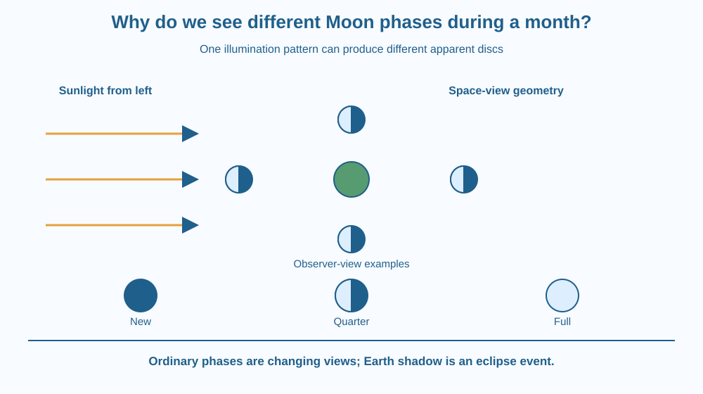

Explain Moon phases using illumination and the direction from which we view the Moon. Distinguish the illuminated half from the visible fraction of that half. Correct the misconception that Earth's shadow produces the ordinary monthly phase cycle.
The Moon can look like a thin crescent, a half-disc or a nearly complete circle. Its solid body has not been sliced into a different shape each night. The Sun continues to illuminate roughly half of it, but the illuminated portion visible from Earth changes.
Why does a half-lit sphere not always look half-bright to an observer? Imagine walking around a ball lit from one side. The amount of its bright region facing you changes even if the lamp's direction stays fixed.
Moon phases are a viewing-geometry problem, not a new explanation of the force keeping the Moon in orbit.
The Moon does not shine by generating visible light like the Sun. We mainly see sunlight reflected from its surface. At ordinary phase positions, approximately one hemisphere is illuminated while the other is not directly sunlit.
The phase describes how much of the Moon's apparent disc is illuminated as viewed from Earth. It depends on the relative positions of the Sun, Earth and Moon. The entire physical Moon remains present, including parts of the night side that may be faint or difficult to see.
Near new Moon, the Moon lies in roughly the Sun's direction as viewed from Earth. Most of the illuminated hemisphere faces away from us, so the disc is difficult to see against the sky. This does not mean the Sun has stopped shining on the Moon.
At a quarter phase, the Sun-Earth-Moon viewing geometry gives us about half of the apparent disc illuminated. The name quarter refers to progress through the cycle, not a claim that only one-quarter of the visible disc is bright.
Near full Moon, the Moon is opposite the Sun in our sky. We see most of the illuminated hemisphere. Between these positions, crescent and gibbous appearances represent intermediate visible fractions.
Waxing means the illuminated fraction visible from Earth is increasing; waning means it is decreasing. A phase cycle from one new Moon to the next takes about 29.5 days. This approximate interval describes the illumination cycle rather than every possible astronomical period associated with the Moon.
Earth's shadow is responsible for a lunar eclipse, which is a different event. Ordinary phases are not caused by Earth's shadow gradually covering the Moon. The Moon's tilted path means exact eclipse alignments do not happen at every new or full Moon.
Observers can see the same phase with different apparent orientations depending on location and viewing direction. A crescent's tilt is therefore not a complete phase definition. The geometry of the illuminated fraction is more reliable than a universal rule that its bright edge must look exactly the same in every photograph.
Draw a lamp at one side of a page and a ball at several positions around a central observer. Shade the side of each ball facing away from the lamp. That shading represents the unilluminated hemisphere, not Earth's shadow.
From the observer, draw a viewing line to each ball. Ask how much of the bright hemisphere is facing along that line. At some positions the observer sees little bright surface, at others half, and at others most of it.
Keep two drawings separate: the space-view geometry and the disc appearance from Earth. Confusing those perspectives is a common source of errors. A top-down half-lit ball is not automatically the same picture as the Moon's apparent disc.
The SVG shows sunlight arriving from one direction, Earth at the centre and four Moon positions. Each Moon has its Sun-facing side illuminated. Separate small discs below show the approximate appearance from Earth at selected positions.
Labels distinguish new, quarter and full phases. A caption states that ordinary phases do not require Earth's shadow crossing the Moon. The diagram is not to scale, and the spacing has been adjusted so labels remain readable.
The illustration addresses geometry only. It does not repeat gravity, orbital stability or the explanation of why the same side of the Moon usually faces Earth.

Lunar calendars and festivals in India make the changing Moon familiar. The scientific phase cycle provides a physical reference, while the detailed calendar rules can depend on tradition and observation. This lesson explains the sky geometry rather than predicting a festival date.
A photograph of a crescent from a different location may look tilted compared with one taken near home. The difference does not mean that the Moon has reversed its phase sequence. Orientation and illuminated fraction are separate observations.
Never look directly at the Sun to align a model, and do not use binoculars near the Sun. A classroom diagram or safe lamp-and-ball arrangement can explain the geometry without direct solar viewing.
Use paper, a pencil and two colours. A physical lamp is optional and must not be hot or require rearranging wall-socket connections.
Check that your ordinary-phase explanation never sends an Earth-shadow band across the Moon. The drawing should compare perspectives, not imply that Earth and the Moon are close enough for their circles to match their actual size and spacing.
Why does the phrase quarter Moon show a half-bright disc? Explain which cycle quantity the name refers to and which visible quantity the picture shows.
Now consider a lunar eclipse near full Moon. Distinguish the ordinary reason the Moon looks full from the additional alignment that allows Earth's shadow to reach it. Treat the eclipse as an extra event, not the cause of the entire phase sequence.
What causes the ordinary Moon phase sequence?
Answer: A — The Sun-Earth-Moon geometry changes the illuminated fraction visible from Earth.
Why does a quarter Moon look about half bright?
Answer: C — The cycle name and the visible bright fraction describe different quantities.
Earth shadow crosses the Moon near full phase. What extra event is occurring?
Answer: B — A lunar eclipse occurs when the alignment lets Earth shadow fall on the Moon.
Prepare a two-view explanation of three phases. For each, show a space-view ball illuminated from the same direction and a separate observer-view disc. Label the viewpoint clearly.
Use your drawing to correct the claim that Earth's shadow causes every crescent. Include one sentence stating what Earth's shadow does cause, without introducing orbital forces or attempting to forecast a particular eclipse date.
The Moon can be half illuminated while looking almost dark or almost full from Earth. The apparent contradiction disappears when illumination and viewing direction are treated as separate parts of the model. One statement concerns the whole sphere; the other concerns the hemisphere facing the observer.
Moon phases show changing views of the sunlit hemisphere; Earth's shadow causes lunar eclipses, not the ordinary monthly phase sequence.